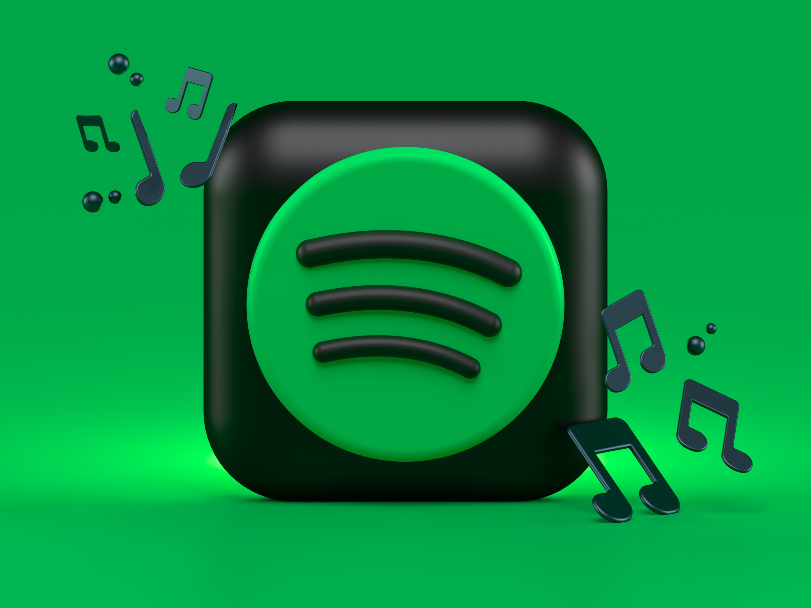

Intro

Hello, my name is Michael Melkonian and like many out there I too enjoy listening to music and podcasts. I have and continue
to use Spotify on a daily basis (now more than ever) and truly understand the importance of such an intuitive platform for society. However, what I
have not really considered was the opposite end of the spectrum in that Spotify is also a platform many use to express their talent.
Coupling this inquisition with Spotify's challenge, I set out to gain insight on
what artists both loved and felt could be added to their world of music/podcasts. Doing so
led to interviews and surveys beween artists who produce different genres of music, but have also been
on the platform for an average of 3-4 years.
Through the data I have gathered myself as well as through personal research, I was shocked by the similarity in that artists
also want to have stronger engagement with their audience through the Spotify app, although were still very unfamiliar with the new audio format.
The Artists Input
Now I am no artist, so even though I am an avid user of the app, I am still not too familiar with what Spotify for Artists really has to offer. Therefore I set out to ask those who did, but in what I believed was the most efficient way possible; surveys. For a couple of days I devised a few questions for both this prompt
to really understand what artists loved about the platform, if they were familiar with the new feature mentioned in the prompt, and what they believe would best be added to the feature to increase user engagement.
Familiarity
The average familiarity within the results of the artists showed an approximate 3.5 out of 6,
and when we couple that with the average time the creators have spent on Spotify for Artists, which again was 3-4 years it shows that there is a large room for
improvement boosting its popularity.
Data Artists Want
Really, knowledge and understanding of data analytics allows for any company/business to learn from their process in producing and craft their work
to increase efficiency and reduce cost. For artists, legible data analytics really can help the Big Names build loyalty with their fans and the New Names
grow their fan base. So through these surveys I have come to a clearer understanding of what would both help an artist grow while engaging them to use this new audio format.
Essentially strings with one guitar pick... Ba Dum Tsh.
One prominent similarity among artists is their demand for a variety of information in regards to the success this new audio format would bring with its use.
Demands such as information/data regarding the successs rate that comes with the use of this new audio format.
This information, could be more detailed than the already present, Listenership Drop, Age, Gender, and Episode Performance.
For instance, new creators are initially most with the rate of their growth than most other categories, so there should be a presentation of a before and after
with the use of the audio format along with listener rates.
Another approach in getting artists, especially newer ones, to use this feature is to see more major artists use it, because after all the eyes are on them
so that would open doors for a trend to follow among the rest of content creators.
Data and Solutions

How I Got Insight
In this text I have have included a link to the survey I created and used to get insight from artists
regarding the new audio format Spotify provides. Feel free to click this Survey Link
and give it a go!
Stats
350+ million users in over 90 markets
286+ million monthly listeners active on Spotify
Over 60,000 tracks are now uploaded to Spotify every single day
44% of users listen to Spotify on a daily basis
Interpreting the Stats
When Spotify launched in 2008 it paved the way for artists to share their music with the ever evolving world of technology. Progressively, it also
made it more accessible for new and upcoming artists to share the work they have created with a potential to have a growing audience.
Having 60,000 tracks uploaded to Spotify each day coupled with the 350 million and growing users in over
90 markets, its easy to say that there is and will continue to be an audience for many artists new and known. Especially
since almost half of the users,
use Spotify to consume their music/podcast/news on a daily basis.
Introducing the New Format
A quick and simple way to get artists acquianted with this new audio format is to provide them with an option of getting a tour.
All while acknowledging its use by artists/creators to users who may be interested in taking a gander would likely contribute to an increase of awareness of the feature.
Notify the Audience
The audience will have a general selection of artists they tend to listen to more often than others. Considering this,
another way to engage the audience would be to simply notify them that their desirable artists have updated the playlist to
include their input, using the new audio format of course.This leads me to my next proposition in getting more artist engagement with the feature.
Giving the Audience A Choice
Further exploring the audio format myself as well as having it mentioned by a couple of artists,
rather than having a playlist that is dedicated solely to having
both music and artists input, the more efficient and option presentative method I believe would be to allow both users and artists to go into a singular playlist that allows them
to solely have music or both. This would reduce the clutter the users would have to go through and make it simpler for artists to
just add their input to an already existing mutatable playlist.
Merging the Worlds
It has been brought to my attention that artists would really prefer to have better engagement with their listeners mainly through
Spotify. An idea would be to allow artists to notify other artists when one another are being featured in up and coming songs/podcasts.
Aleternatively, the worlds of both listeners and creators (artists) could be brought closer together with a simple comment section in the
new audio format. Potentially even allow listeners to engage with the artists through these comment sections during live recordings.
The Product
Ultimately here, the goal is to increase the interactivity between the artists and their audience first by introducing the new features to the artists while providing them with
promising data regarding listenership and audience growth that comes with the use of this new feature. The next step would be to notify the audience that artists they are interested in have
uploaded a new, more in depth look into the artists perspective while creating their work. This of course could also be formatted in a way where listeners would be able to
submit questions or comments for their artists to see and potentially respond to using the new feature as a medium. This approach could also draw in a larger audience by
incorporating a new live feature to allow for a thinner barrier between artist and audience. Finally, we could clean up the clutter by merging the two playlists into one by allowing the
listener to choose whether or not they would like to get insight on the artists perspective or just simply listen to the music that they like. This addition of choice
would allow for artists to add commentary to an already existing playlist they have!
All in all, I conclude my approach in gaining popularity for Spotify for Artists new audio format feature!
Contact
If you like what you see, feel free to contact me or connect with me on LinkedIn!
Elements